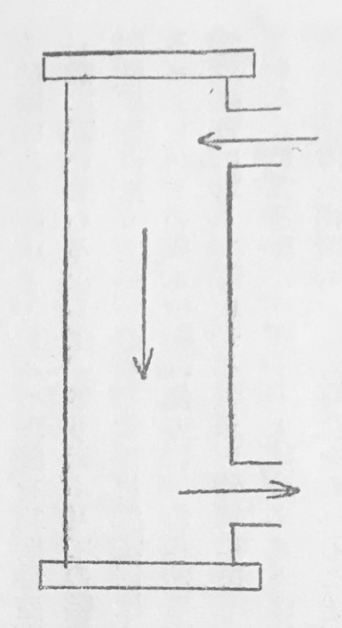
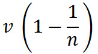
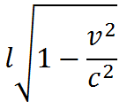
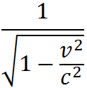
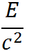
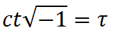

（一九一一年一月一六日チューリッヒの自然科学会席上の講義）
「相対性理論」と名づけられる理論が倚りかかっている大黒柱はいわゆる相対性理論です。私はまず相対性原理とは何であるかを明らかにしておこうと思います。私たちは二人の物理学者を考えてみましょう。この二人の物理学者はどんな物理器械をも用意しています。そして各々一つの実験室をもっています。一人の物理学者の実験室はどこか普通の場所にあるとし、もう一人の実験室は一定の方向に一様な速さで動く汽車の箱のなかにあるとします。相対性原理は次のことを主張するのです。もしこの二人の物理学者が彼等のすべての器械を用いて、一人は静止せる実験室のなかで、もう一人は汽車のなかで、すべての自然法則を研究するならば、汽車が動揺せずに一様に走る限り、彼等は全く同じ自然法則を見出すでありましょう。幾らか抽象的にこう云うことも出来ます。自然法則は相対性原理によれば基準体系の併移運動に関しません。私達は今この相対性原理が旧来の力学でどんな役目をもっていたかをみましょう。旧来の力学は第一にガリレイの原理の上に安坐しています。この原理に従えば、ある物体は他の物体の作用を受けない限り、直線的な一様な運動にあります。もしこの法則が上に云うた実験室の一方に対して成り立つ［＃「成り立つ」は底本では「成リ立つ」］ならば、それはまた第二に対しても成り立ちます。私達はそのことを直接に直観から取り出すことが出来ます。私達はそれをしかしまたニウトン力学の方程式からも引き出すことが出来るのです。私達はその方程式をもとの基準体系に対して一様に動いているものへ転換させればよいのです。
私はここで実験室と云っていますが、数理的物理学では事柄を一定の実験室に関係させる代りに坐標系に関係させるのが普通です。このようにある何かに関係させるという場合に本質的なのは次の事柄です。私達が一点の位置について何か云おうとするときには、いつも私達はこの点とある他の物体系の一点との合致を示し与えます。もし私が例えば自分をこの質点であると取り、そうして、私はこの部屋のなかのこの場所に居ると云いますなら、私は自分を空間的の関係でこの部屋のある点と合致させたのです。あるいは私はこの合致を云いあらわしたのです。数理的物理学ではこれを云い表わすのに、三つの数、すなわちいわゆる坐標によりて、場所を示そうとした点が坐標系と称えられる剛体体系のどの点と合致するかを云い表わします。
これは相対性原理について最も一般的のものであったのでしょう。もし私達が、十八世紀もしくは十九世紀前半の物理学者に、この原理を疑うかどうかを尋ねたとしましたなら、彼はきっとこの質問を断然否定したに違いありません。その当時は各の自然現象をすべて旧来の力学の方則に帰せしめられることが確かであるとしていましたから、それを疑う理由をちっとも持っていなかったのです。私はここで、物理学者が経験によってどうしてこの原理に矛盾する物理学的論理を立てるようになったかを説明しようと思います。そのために私達は光学及び電気力学の発展を、それらが前世紀において、漸次是認せられた限りにおいて、相対性原理の立場から簡単に考察してみなければなりません。
光はちょうど音波のように干渉や
 折を示します。ですから私達は光を一の波動としてもしくは一般にある媒質の週期的に変化する状態として見做さなくてはならないように感じさせられます。この媒質をエーテルと名づけました。かような媒質の存在は近頃までは物理学者に絶対に確かであるように見えました。次に述べる理論はエーテル仮説とは相容れないものですが、しかししばらく私達はこれに依ることにしましょう。私達は今この媒質に関してどんな考え方が発展されて来たか、またこのエーテルを仮定する物理学的理論を導き入れたためにどんな問題が起ったかをみようと思います。私達は既に、光がこの媒質の振動から成ると考えたこと、すなわちこの媒質は光及び熱の振動の伝播を引き受けていると考えた事を述べました。静止物体の光学的現象だけを取り扱っている間は、光がこの媒質の運動を起すと云う外に、それの別の運動を問題にするには及ばなかったのでした。単にこの媒質はそこで見ている物体と同様に――光が起すはずであった振動を取り除けば――静止の状態にあると仮定されました。
折を示します。ですから私達は光を一の波動としてもしくは一般にある媒質の週期的に変化する状態として見做さなくてはならないように感じさせられます。この媒質をエーテルと名づけました。かような媒質の存在は近頃までは物理学者に絶対に確かであるように見えました。次に述べる理論はエーテル仮説とは相容れないものですが、しかししばらく私達はこれに依ることにしましょう。私達は今この媒質に関してどんな考え方が発展されて来たか、またこのエーテルを仮定する物理学的理論を導き入れたためにどんな問題が起ったかをみようと思います。私達は既に、光がこの媒質の振動から成ると考えたこと、すなわちこの媒質は光及び熱の振動の伝播を引き受けていると考えた事を述べました。静止物体の光学的現象だけを取り扱っている間は、光がこの媒質の運動を起すと云う外に、それの別の運動を問題にするには及ばなかったのでした。単にこの媒質はそこで見ている物体と同様に――光が起すはずであった振動を取り除けば――静止の状態にあると仮定されました。運動物体の光学的現象、並に――それと関聯して――運動物体の電磁気的性質を考察するようになったときに、私達はその観察する物理学的体系のなかで、物体に種々の速度を与えたならばエーテルはどうなるかと云う問題に向わなければなりませんでした。エーテルは物体と一緒に動くのでしょうか。すなわち各の場所でエーテルはそこにある物質と同じ様に動くでしょうか。またはそうではないのでしょうか。最も簡単な仮定はエーテルがどこでも物質と全く同じ様に動くと云うことです。第二の可能な仮定は、これもやはりかなりな簡単さを示すものですが、こうです。すなわちエーテルは物体の運動に全然与からないと云うのです。それからまた中間の場合も可能でありましょう。この中間の場合と云うのは、エーテルがある度まで物質と無関係に空間内に動くのです。私達は今、この問題の解答を得るためにどう云うことが試みられたかをみようと思います。最初に得られた重要な説明は仏国の物理学者フィゾーの行った大切の意味のある実験から来ています。この実験は次の問題から起されました。

第一図
図に示した管はその前後を硝子板で閉じてあり、両端の接続管から管を通じて軸の方向に液体を流すことが出来るようにしてあります。管を流れる液体の速度はやはり軸の方向に管を通る光線の伝播速度に、どう影響するでしょうか。エーテルが管を流れる物質と一緒に動くことが本当であるなら、次のように考えられます。静止した水のなかで光の進む速さが V であるとします。つまり V は水に対する光の速度であるとし、また v が［＃「v が」は底本では「V が」］管に対する水の速度であるとしますと、私達はこう云わなくてはなりますまい。水に対する光の速度は、もしエーテルが水に固着しているなら水が動いていてもまたは動かずにいても、それには関せずにいつも同じであります。それですから管に対する光の伝播速度は液体が動いている場合には、これが静止している場合よりも、v だけ［＃「v だけ」は底本では「Vだけ」］大きいと予期されます。フィゾーの実験では、二つの干渉し得る光線束が上述のように管を通りました。液体の運動速度が干渉の縞の処置に及ぼす影響からして、水の運動速度 v が［＃「v が」は底本では「V が」］静止管に対する光の伝播速度にどれほどな影響を及ぼしたかを計算することが出来ました。フィゾーは、管に対する光速が液体の運動のために v だけ［＃「v だけ」は底本では「V だけ」］増されずに、かえってただその分数（n を液体の屈折率としますと）だけしか増さないことを見出しました。この屈折率がほとんど 1 に等しく、すなわち光が液体のなかでほとんど真空におけると同じ速さで進むとしますと、液体の運動はほとんど影響をもちません。この事から、光が水に対していつも同じ速度で進むと云う考え方は、経験と一致しないと結論しなければなりませんでした。
次に簡単な仮説は、エーテルが物質の運動に少しも与からないと云うことでした。この仮説に基づいては、光学的現象が物質の運動によってどう影響されるかを、そう簡単に導き出すわけにはゆきません。しかしローレンツは一八九〇年代の中頃に、全く動かないエーテルの仮定に基づく一つの理論を立てることに成功しました。彼の理論は運動体の光学及び電気学のほとんどすべての知られた現象を、その中にまた今述べたフィゾーの実験をも含めて、全く正しく与えます。私がすぐここで注意したいのは、ローレンツのと根本的に異った理論で、しかも簡単な判り易い仮定に基づき、そして同じことを為し遂げるようなものは、決して立てられなかったと云うことです。それですから、この範囲では静止エーテルの理論を、経験の全部と一致する唯一のものとして承け容れなければならなかったのでした。
私達はこの静止エーテルの理論を相対性原理の立場から観察しましょう。外力を受けない質点がある体系に関して一様に動いているならば、そう云うすべての体系を私達は非加速的のものとして云い表わします。そうしますと、相対性原理はこう主張するのです。自然法則はすべての非加速的体系に関しては同一であると、静止エーテルに関するローレンツの根本仮説は他方に、あらゆる可能な非加速的運動体系のうちで、一定の運動状態のもの、すなわちこの光の媒質に対して静止せる体系を特別に徴しづけます。それですから、たとえこの考えに従っても、哲学上の意味でのある絶対運動が存在するとは云うことは出来ませんけれども、――なぜならそれは全然見限られたことで、私達はただ物体の相対的な位置変化を考えることが出来るだけですけれども、――しかし私達が今一つの運動状態、すなわちエーテルに対する静止を特別に扱ったと云うことで、物理学的の意味で一つの絶対運動が形づくられます。私達はエーテルに関して静止する各の物体をどうにか絶対静止のものと云うことが出来ます。エーテルに対して静止せる基準系はあらゆるその他の加速しない基準系に対して特別のものとせられます。この意味でローレンツの静止エーテルの根本観念は相対性原理に適いません。静止エーテルの根本観念は次の一般的考察に導きます。一つの基準系 K がエーテルに対して静止しており、もう一つの他の基準系 K' はエーテルに対して一様に動いているとします。エーテルに関する K' の相対運動は K' に対して成り立つところの自然法則にある影響を及ぼすと云うことが期待せられるわけです。つまり K' に関する自然法則は K' のエーテル内における運動のために K に関する法則とは異っている事が期待せられるのでした。その上にまた地球は私達の実験室と共に一年全体の間この光の媒質に対して静止していることは出来ないので、それはすなわち K' なる基準系の役目をするはずであると云わなければなりませんでした。従ってこの運動の影響が私達の実験室における実験にあらわれるような何等かの現象が見出されることを仮定しなければならないのでした。私達の物理的空間は、これを地球上に在るとする限り、この相対運動のために方向によって異った性質をもつと信ずべきはずでした。けれども何等この様な事を実証することはどんな場合にも決して成功しませんでした。
ところでこのエーテルに対してはおもしろく思われませんでした。フィゾーの実験はエーテルが物質と一緒に動かないことを云いあらわします。すなわち光の媒質の物質に対する運動があるわけです。けれども、この相対運動を確立しようとするすべての実験は否定的の結果を与えました。つまりそこにはお互に矛盾する様に見える二つの結果があります。そしてこの不愉快な乖離を解放することが出来なかったことは、物理学者にとりて非常に痛ましい事でした。私達は、どんなにしても取り除けを見出すことの出来なかった相対性原理を、どうにかしてローレンツの理論と一致させることは出来ないであろうかと云うことを考究しなければなりませんでした。今それへ入り込む前に私たちは静止エーテルのローレンツ理論から最も本質的な部分を抽き出してみましょう。静止エーテルが存在すると云うことは物理学的に何を意味しているでしょうか。この仮説の最も大切な内容は次のように云いあらわすことが出来ます。それはここに一つの基準体系（ローレンツの理論で「エーテルに対して静止せる体系」と名づけられる）が存在していて、それに関しては真空中の各の光線が普遍的な速度 c をもって伝播すると云うことです。そしてこれは光を発する物体が静止していてもまたは動いていても、それに無関係に成立つと云う事です。この主張を私達は光速一定の原理と名づけましょう。そこで上に述べた問題はまた次の様な形式にすることも出来ます。取り除けなしに満足されるように見える相対性原理をこの光速一定の原理と結合させることは出来ないでありましょうか。次のように、ちょっと考えると、まずこれが否定されます。基準体系 K に対して各光線が速度 c で進むとしますと、これは K に対して運動している基準系 K' に対してもはや成り立ちません。すなわち K' が光線の進む方向に速度 v で［＃「速度 v で」は底本では「速度で」］動いているならば普通の見方では K' に対する光線の速度は c−v に等しいとおかれるはずです。つまり K' に対する光の伝播の法則は K に対する速度と異なることになり、相対性原理が損われます。これは恐ろしいディレンマです。ところがよく考えると自然はこのディレンマには全く負い目をもってはいないので、むしろこのディレンマは私達がその考察のなかに、従ってまた私の今述べたもののなかにも、黙って勝手に仮定をつくっていたことから起るのです。私達は事がらを矛盾なしにかつ簡単に考えるようにするために、それを取り去ってしまわなくてはなりません。
私はこの勝手な仮定、すなわち私達の物理学的思考の根本に横わっているものを説明してみようと思います。この勝手な仮定のうちの第一のかつ最も大切なものは時間概念に関するものであって、私はどこにこの勝手さが存立するかを述べてみましょう。それをうまく行るために、私はまず空間について論じ、その上で時間をこれと平行に置こうと思います。もし私達が空間における一点の位置、すなわちある坐標系に対する一点の位置を云い表わそうと思うならば私達はその直交坐標 x, y, z を与えます。この坐標の意味は次の如くです。よく知られた規則に従って坐標面に垂直線を立て、一つの与えられた単位物指がこの垂直線上に幾囘運ばれたるかをごらんなさい。この囘数を数えた結果が坐標です。坐標で空間を指定するのはそれゆえ一定の操作の結果です。私が指示する坐標は従って全く一定の物理的意味をもっています。私達は一定の与えられた点が実際に指示された坐標をもつかどうかを試験することが出来ます。
この関係は時間ではどうなるでしょうか。そこでは私達はそれほどうまく行かないのを見るでしょう。従来私達はいつもこう云うて満足していました。時間は出来事の独立変数であると、かような定義では誰れもそれに基づいて事実上存在する出来事の時間値を測ることは出来ません。ですから私達は、その定義に基づいて時間測定が可能であるように、時間を定義するように行ってみなければなりません。私達はある坐標系 K の原点に一つの時計（例えばゼンマイ時計）をおくとしましょう。この時計で直接にこの点ならびにそのごく近所に起っている出来事を時間的に値いづけられることが出来ます。K の他の点で起る出来事はしかしこの時計で直接に時を定めるわけにはゆきません。K の原点には時計の傍にいる観測者が光線に依ってその出来事の報知を受けとる時刻をしるすとしますと、この時刻は出来事自身の時ではなくて、出来事から時計に達するまでの光線の伝播時間だけ出来事の時刻から遅れて［＃「遅れて」は底本では「運れて」］いるのです。もし私達が K 系に対するその方向の光の伝播速度を知っているとすれば、出来事の時刻はその時計で定めることが出来るのでしょう。けれども光の伝播速度の測定は私達の取り扱っている時間決定の問題がすでに解かれたときにのみ可能なのです。すなわち一定の方向における光の速度を測るためには、光線の伝わる二点 A 及び B の間の距離と、その外 A において光を送り出した時刻ならびに B において光の到着した時刻とを測らなければならなかったでしょう。つまり諸処での時間測定が必要であるわけですが、それは私達の求める時間の定義が既に与えられた時にのみ実行し得るのでしょう。しかし一つの速度特に光の速度を測ることが、任意の指定なしには原理的に不可能であると云うならば、私達は光の伝播速度に関してなお任意な指定をなしてもよいのです。そこで私達は真空中の光の伝播速度は一点 A から一点 B へゆく途で B から A への光線の伝播速度と同じ大きさであると定めます。この指定のお蔭で私達は K 系に対し種々の点に静止して列べられた同じ性質の時計を実際に合わせることが出来るようになります。例えば二点 A と B とにある時計を次のことが成り立つように合わせましょう。A において時刻 t（A の時計で測って）に一つの光線を B に向けて送り、それが時刻 t＋a（B の時計で計って）に B に到着するとしますと、逆に時刻 t（B の時計で測って）B から A の方へ送られた光線は時刻 t＋a（A の時計で測って）に A に来なければなりません。これが K 系に配置されたすべての時計を合わせるための規定なのです。もし私達がこの規定を満足させたなら、それで私達は実測物理学者の立場から一つの時間決定を求め得たのです。ある出来事の時刻はすなわちかように与えられた規定に従って合わされた時計のうちで、その出来事の場処にあるものの示す時に等しいのです。
ところで、私達はそれによって特に目立った何ものを得たのであろうかと云う疑問が起るでしょう。なぜなればそのすべては自明の事がらのように聞えるからです。目立った事柄と云うのは、全く決った意味の時間指示に達するためのこの規定が全く一定の坐標系 K に対して静止する時の一体系に関係していると云うことにあります。私達は単に一つの時を得たのではなくて、坐標系 K に関した時、すなわち K に対して静止して列べられた時計を含めて坐標系 K に関した時を得たのです。私達はもちろん、K に対して一様に動いているような第二坐標系 K' を［＃「第二坐標系 K' を」は底本では「第二坐標系 K を」］もつならば、全く同じことをこれに関して行うことが出来ます。この坐標系 K' に対しても一つの時計体系をその空間に配置し、それらをすべて K' と一緒に動いているようにしますと、私達はこの K' に関して静止している時計を全く上に与えた規定に従って合わせることが出来ます。そうした上で私達は K' 系に関してもまた一つの時を得ます。
ところがアプリオリにはまるでこう云われません。もし二つの出来事が基準系 K ――私はそれで時計を含めた坐標系を意味させます――に関して同時刻であるなら、同じ出来事は基準系 K' に関してもまた同時刻的であると。つまり時間は一の絶対な、すなわち基準系の運動状態に無関係な意味をもっているとは云われません。それは私達の運動学に含まれていた一つの任意さなのです。
ここにやはり従来の運動学において任意的であった第二の事情があらわれます。私達は一つの物体の形、例えば一つの棒の長さについて話しますが、その長さが幾らであるかを、精密に知っていると信じています。そしてそれが、私達の現象をしるしている基準系に関して運動している場合にもまたそうです。しかし少しく考えて見ますと、その事は私達がこれを本能的に想っているほど、決してそんなに簡単な概念ではないことが判ります。一つの棒がその長い方向に基準系に対して動いているとしましょう。この棒はどれだけ長いかと尋ねてみましょう。この問は［＃「この問は」は底本では「この間は」］ただ次の意をもち得るだけです。すなわち棒がどれほど長いかを知るために私達はどんな実験を行わなければならないかと云うことです。私達はある物指をもった一人の人間を取りて、これを衝き動かし、棒と同じ速度をもたせます。そうすればこの人は棒に対して静止していますから、彼の物指を繰返して棒と並べて、ちょうど実際に静止体の長さを測るのと同じ様にして、その長さを見出すことが出来ます。そこに彼は全く一定の数を得、そして彼がこの棒の長さを測ったと云うことをある権利をもって言明することが出来ます。
しかしながらもし棒と一緒に動いていないで、すべてある基準系に静止しているような観測者のみがあるとしたならば、私達は次の様にすることが出来ます。私達は動いている棒の軌道に沿うて非常にたくさんの時計を配置し、その各に観測者が附き添うているとします。時計は上に与えられた手段に従って光の信号で合わされ、その全体で基準系に属する時間を示すようにします。これらの観測者は K 系に関して棒の前後両端がある一定の与えられた時刻 t に存在する二つの場処を見出します。すなわち棒の前後両端がそこを通過するとき時刻 t を示すような二つの時計を見出すと云っても同じことです。こうして求められた二つの場処（もしくは時計）のお互の距離は基準系 K に対して静止せるある物指を結合線の上に繰り返して列べて測る事が出来ます。この二段の処置の結果を私達は動いている棒の長さとして正当に云いあらわすことが出来るのです。けれどもこの二つの取扱いが必然的に同じ結果に到達するとは限りません。言葉を換えて云えば、一つの物体の幾何学的の容量は、これが見出される基準系の運動状態に必ずしも無関係ではありません。
もし私達がこの二つの任意の仮定をしないならば、私達はもはや次の初等的の問題をも解くことがすぐには出来ないのです。すなわち一つの出来事の坐標 x, y, z, 及び時刻 t が K 系に関して与えられているとき、K 系に対して既知の一様な併移運動にあるような他の系 K' に関する同じ出来事の空間時間坐標 x, y, z, t, を求めると云う事です。つまり従来この問題の簡単な解を得たのは、私達が今任意的と云った仮定をしていたのに依ることが判ります。
どう云う風にして私達は再び運動学を立てなおしたらよいのでしょうか。そこにおのずから次の答が生じます。ちょうど私達に以前痛ましい困難を与えていた事情が私達を踏み歩み得る道に導きます。もちろん今述べた任意的の仮定を取り除いてもっと多くの余地を収得した上です。つまり経験が、私達を強要した二つの外見的には結合し得られないような基礎法則、すなわち相対性原理と光速度一定の原理とがちょうど空間時間転換の問題の一定の解に導くことが判ります。そこで私達は通常の思想と一部分はなはだしく矛盾するような結果に到着します。これに導くところの数学的考察ははなはだ簡単ですが、ここではそれに立ち入りますまい。
x, y, z, t ならびに x', y', z', t' が両基準系 K 及び K' に関する空間及び時間坐標であるならば、基礎とした両原理は
x2＋y2＋z2＝c2t2
及び x'2＋y'2＋z'2＝c2t'2なる二つの方程式各が他のものを帰結するように変換方程式を作らなくてはならないことを要求します。ここには説明しない理由からして変換方程式は一次的でなければなりませんから、これで変換法則が決定されることが少しく研究すれば判ります。（例えば Jahrb. d. Radioakt. und. Elektronik 4. (1907), 418 参照）
むしろ私は、この様にしてその外の仮定なしに全く論理的に進めて達せられる最も主要な帰結に立ち入ることにしましょう。
まず最初は純粋に運動学的のものです。私達は坐標と時間とを一定の方法で物理学的に定義しましたから、空間的ならびに時間的の量の間のどんな関係もある全く一定の物理的内容をもつでありましょう。まず次のことが出ます。もし私達が考察の基礎となした坐標系 K に関して一様に動いているところの一つの固体をもつならば、この物体は、それがこの体系に関して静止の状態でもっているような形に対してその運動方向に一定の割合に縮まって見えます。私達が物体の運動速度を v で、光の速度を c であらわすならば、各の運動方向に測られた長さは、物体の動かない状態で l に等しいものが、運動を共にしない観測者に関しては運動のために

なる大きさに短縮されます。もし物体が静止状態で球形であるなら、それを一定の方向に動かす場合に、これは扁平な楕円体の形を取ります。もし速度が光速度に達するならば、物体は一平面にひしゃげてしまいます。しかし共に動いている観測者から判断すれば、物体は前と同じくその球形を保っているでしょう。他方でこの物体と共に動いている観測者には運動を共にしないすべての対象は全く同様に相対運動の方向に縮まって見えるのです。この結果は奇妙さを示していますが、しかし運動物体の形と云うものは、実際上述のことによれば、ただ時間決定の助けによって始めて見出されるものであって、はなはだ複雑な意味をもっていますから、それを考慮すれば肯かれるわけです。
この「運動物体の形」なる概念が直接に明らかな内容をもっていると云う感じは、そもそも私達が日常の経験では単に光速度に対し実際上無限に小さいような運動速度のみを見るのに慣れていることを思い合わせると、それから得られるでしょう。
次にこの理論の第二の純粋に運動学的の帰結であって、もっと目立った事柄はこうです。ある基準系 K に対して静止して配置されており、これの時間を指示することの出来る一つの時計が与えられていると考えましょう。そうしますと、もしこの時計が基準系に関して一様な運動におかれるならば、K 系から判断して進みが遅れるようになり、この時計の時間指示が 1 だけ進む間に体系 K の時計は K に関して

だけの時間を経過するようになると云うことが証明出来ます。つまり動いている時計は、それが K に関して静止の状態になるときよりも遅く進むのです。運動状態における時計の進む速さは、この時計の指針の位置を、K に対して静止しておりかつ K に関しての時間を測るような時計のうちでちょうど今考に取った運動時計がその傍を通り過ぎるようなものの指針位置といつも比較して見出されると考えなければなりません。もし私達が時計を光速度で動かすことが出来たとしたならば――充分に力を加えるなら私達は時計をほとんど光速度で動かすことが出来たでもありましょう――時計の指針は、K から判断して、無限に遅く進むでしょう。もし次のことが実現されたと考えるなら、事柄は最もおかしくなります。この時計に非常に大きい速度（ほとんど c に等しいような）を与え、これを一様な運動を続けて飛ばせ、それが遠い距離を飛んだ後で反対の方向に衝撃を与えてもと出発した場処へ再び戻るようにします。そうすれば、この時計の指針の位置はその全旅行の間にほとんど変りはしなかったのですが、これに反してその間出発の場処に静止状態に残された全く同じ構造の時計はその指針の位置をすっかり変えてしまっていると云うことになります。これに附言しなけばならないことは、私達がすべての物理的出来事の簡単な一代表として導き入れたこの時計に対して成り立つところのものはまたどんなその外の性質のそれ自身完閉した物理学的体系に対しても成り立つと云うことです。例えば私達がある生物を箱に入れて上に時計のなしたと同様な往復運動をさせますと、この生物は任意に長く旅行した後でどれほども変らずにその最初の場処に戻って来ることが出来たでもありましょう。ところがまるで同じ生物がもとの場処に止っているならば、既に久しい前に新たな子孫に代らせたにちがいありません。運動している生物にはこの旅行の長い時間は、その運動がほとんど光速度で行われたとすれば、ただ一瞬時にすぎないのです。これは経験が私達を強要して私達の基礎におかしめた原理の否定し難い一つの帰結なのです。
ところで物理学に対する相対性理論の意味についてもう一言しよう。この理論の要求する処は、ある任意の速度に対して成立する自然法則の数学的表式は、この法則をあらわす式のなかに転換式によりて新しい空間時間坐標を引き入れてもその形を変えないと云うことです。それによりて可能性の多様さは著しく制限せられます。静止せるもしくは遅く動いている物体に対して法則が知られているなら、それから簡単な転換によりて任意に速く動いている物体に対する法則を導き出す事が出来ます。かようにして例えば速い陰極線に対する運動法則を出すことが出来ます。その場合にニウトンの式は任意に速く動く質点には成り立たないで、これはやや複雑の構造の運動方程式で置き換えられなくてはならないことが判ります。陰極線の屈曲に関してこの法則は全く満足的に経験と一致することが示されました。
相対性理論の物理学的に最も大切な結論のうちで次のことが記されなくてはなりますまい。私達は前に、動いている時計が相対性理論に従えば静止している同じ時計よりも遅く進むことを見ました。私達がこれを懐中時計で実験して確証しようとすることはたぶんいつまでも見込のないことでありましょう。なぜなら私達がかようなものに与え得る速度は光速度に対して無視せられるほど小さいものであるからです。けれども自然は私達に全く時計の性質をもちかつ非常に速く動かされ得るような物を提供します。これはスペクトル線を送り出す原子であって、私達はこれに電気の場によって数千キロメートルの速度を与えることが出来ます。（カナル線）理論によれば、これ等の原子の振動数はその運動によって、ちょうど動いている時計に対して導き出されるのと全く同様の方法で、影響されて見えることが期待せられます。この実験は大きな困難に出遇いはしますが、それでも私達は、この方法で将来の十年間のうちには相対性理論の重要な確証もしくは反駁を得ることを望むことが出来るでしょう。
理論は更に、物体の惰性的質量がそのエネルギー内容に関係すると云う大切な結果に導きます。ただしこれははなはだわずかの程度であって、直接にこれを証明することは全く望みないことです。しかし物体のエネルギーが E だけ増せば、惰性的質量はだけ増します。この法則によって質量保存の法則は倒壊されたので、云い換えればエネルギー保存の法則と唯一のものに融合したのです。この結果はかなり著しく響くかもしれませんが、しかし相対性理論なしにもまたある特殊の場合には経験的に知られた事実からして、惰性的質量がエネルギー内容と共に増すことを確実に結論することは出来ます。
もう一言この理論が主として、悼ましくも余りに早く逝いた数学者ミンコウスキーによって得たところのはなはだ興味ある数学的補助について述べましょう。相対性理論の変換方程式は、それが
x2＋y2＋z2−c2t2
なる式を不変量としてもつように作られています。時間 t の代りに虚数的変数を時間変数として導き入れますと、この不変量はx2＋y2＋z2＋τ2
なる形を取ります。この際空間的坐標ならびに時間坐標は同じ役目をなします。この空間及び時間坐標の形式的等値性を相対性理論において更に押し進めますと、この理論のはなはだ見易い説明に達し、その応用をより容易くするのです。物理的出来事はある四次元間において云い表わされ、また出来事の空間的関係はこの四次元空間における幾何学的法則としてあらわれます。